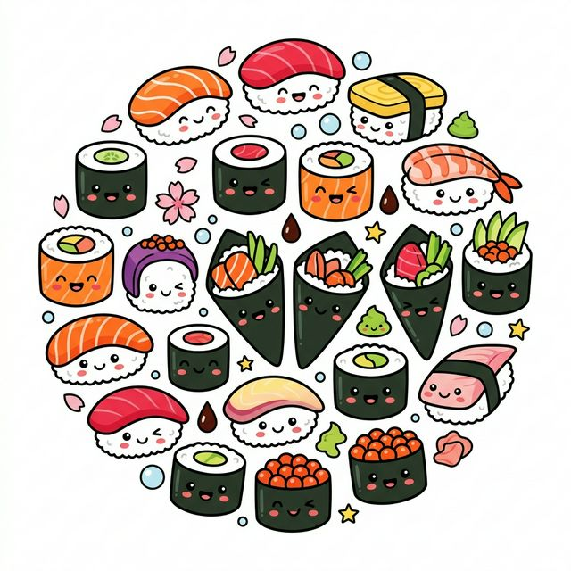

O app mais divertido para acompanhar quanto sushi você devora no rodízio. Controle peças, calorias e compartilhe com os amigos!

Porque contar sushi deveria ser tão divertido quanto comer.
Adicione e remova peças com um toque. Interface intuitiva e rápida como um sushiman experiente.
EssencialCada tipo de sushi tem suas calorias calculadas automaticamente. Saiba exatamente o que está comendo.
SaúdeGere imagens estilo Strava para postar nos stories. Frases engraçadas e emojis inclusos!
PopularSalve seu consumo diário e acompanhe a evolução ao longo do tempo. Dados seus, sempre acessíveis.
DadosInterface divertida e única com estilo de caderno de desenho. Zero chatice, 100% personalidade.
DesignAdicione seus próprios tipos de sushi com ícone, cor e calorias personalizados.
NovoSimples como pedir jokê.
Selecione entre 8+ tipos de sushi ou crie o seu personalizado com ícone e cor.
Toque + para cada peça que comer. As calorias são calculadas automaticamente.
Gere um card divertido e poste nos stories quanto sushi você devorou.
Baixe agora o Sushi Counter e nunca mais perca a conta no rodízio.
Baixar na App Store